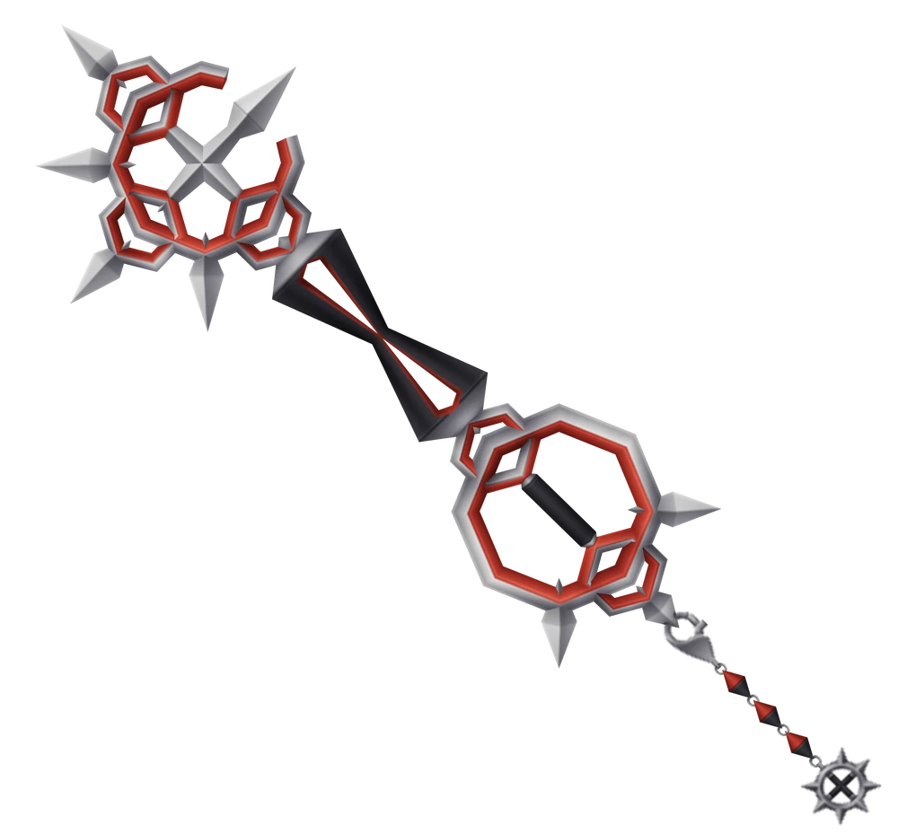

This is the starter keyblade you start the game with this one
You get this one after talking with the three fairies from sleeping beauty
you get this keyblade after going to the land of Dragons(Mulan)
you get this keyblade after going to the olympic colosium (Hercules)
you get this keyblade after going to timeless river (1920's mickey mouse)
you get this after going to port royal (pirates of the caribian)

this keyblade is awarded after sora completes the pride lands (lion king)
This is given to after talking to yuna after the 1000 heartless battle
this is awarded after going into tron (tron)
this is from the enchanted castle (beuaty and the beast)
Awarder after defearting jafar in agrabraha (Aladin)
Awarded after doing all the 100 acre wood tasks
defeat oggie boogie in christmas town (Nightmare before Christmas)
Talk to leon befor going back to tron for the 2nd time
Given by Axel when he dies
Defeat Roxas
defeat Xigbar

Complete the Goddess of fate Cup
defeat sephiroth in radiant garden
Get all the synthesis items and craft it

Complete all 13 mushroom mini tasks that are found throughout all the worlds